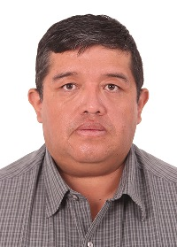

Giancarlo Teran Olguin | WDD 130
Hello! My name is Giancarlo Teran Olguin and I am from Cochabamba, Bolivia, and I love traveling to different places in my homeland, Bolivia. Cochabamba has a wide variety of cuisine, from traditional dishes like "Pique Macho" to the delicious "Anticucho". I invite you to visit it anytime. I have high expectations for this Software Developer career, to acquire the knowledge and be able to start my own business providing technological solutions to my community and the world.